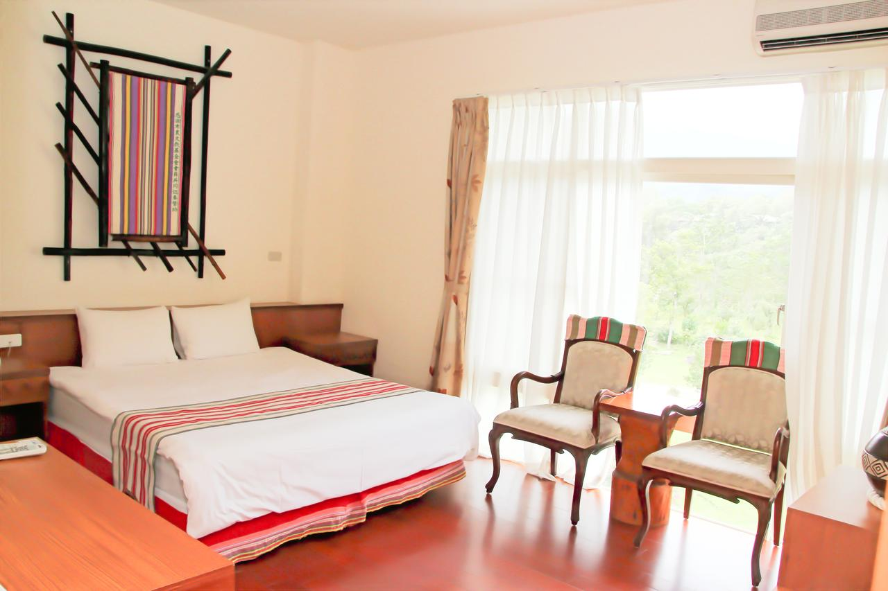
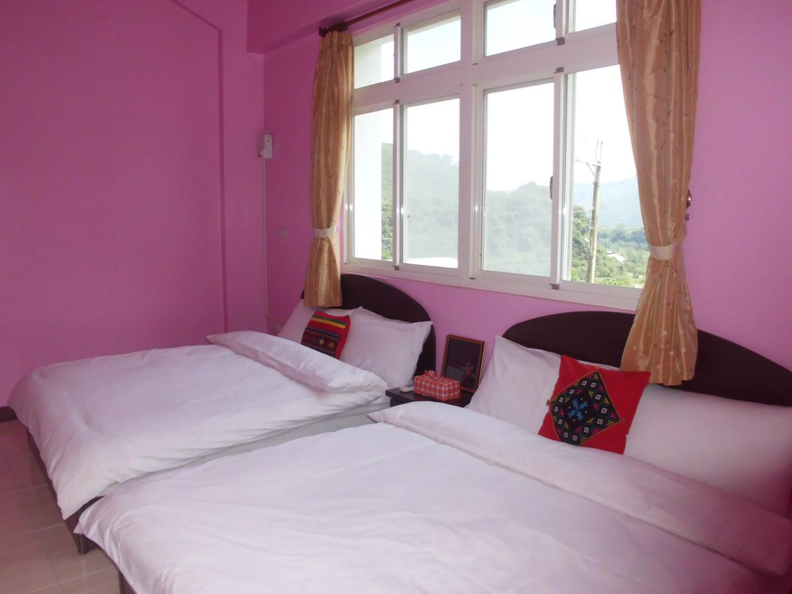
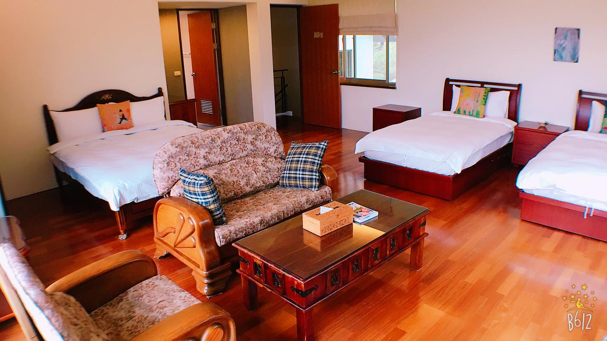
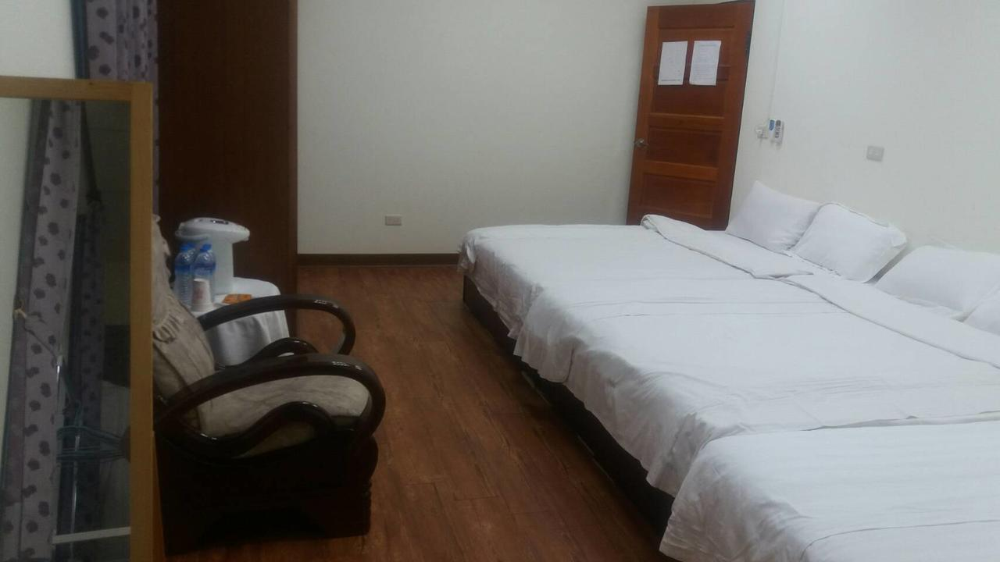
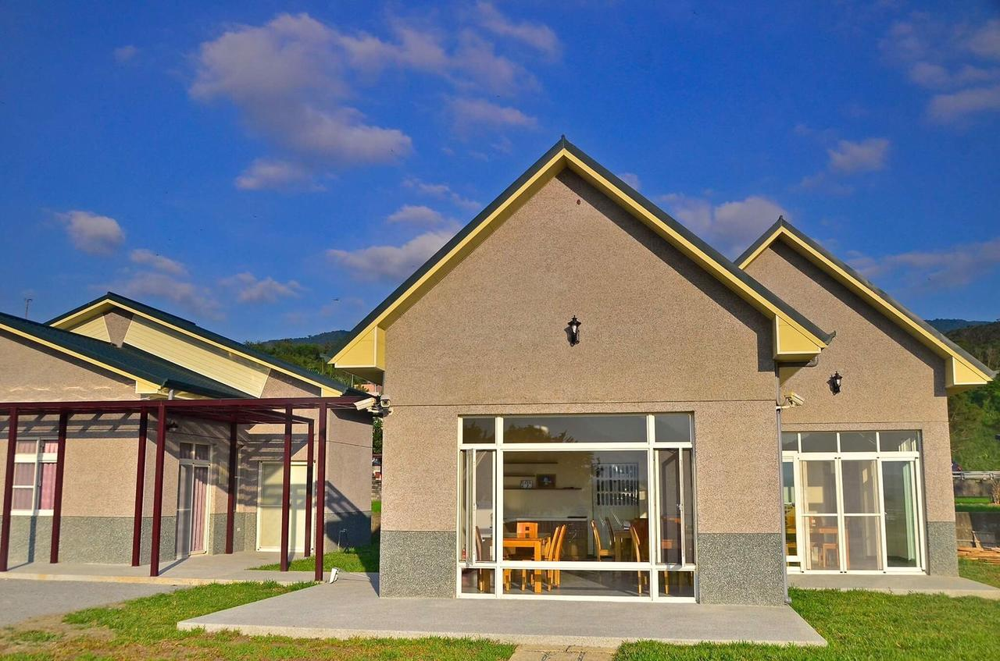

<!DOCTYPE html>
<html lang="en">

<head>
    <meta charset="utf-8">
    <meta name="viewport" content="width=device-width, initial-scale=1, shrink-to-fit=no">
    <meta name="description" content="">
    <meta name="author" content="">

    <!-- Bootstrap core CSS -->
    <link href="vendor/bootstrap/css/bootstrap.min.css" rel="stylesheet">

    <!-- Custom fonts for this template -->
    <link href="vendor/fontawesome-free/css/all.min.css" rel="stylesheet" type="text/css">
    <link href="https://fonts.googleapis.com/css?family=Montserrat:400,700" rel="stylesheet" type="text/css">
    <link href='https://fonts.googleapis.com/css?family=Kaushan+Script' rel='stylesheet' type='text/css'>
    <link href='https://fonts.googleapis.com/css?family=Droid+Serif:400,700,400italic,700italic' rel='stylesheet' type='text/css'>
    <link href='https://fonts.googleapis.com/css?family=Roboto+Slab:400,100,300,700' rel='stylesheet' type='text/css'>

    <!-- Custom styles for this template -->
    <link href="css/agency.min.css" rel="stylesheet">

    <!-- 當地住宿 -->
    <title>住宿———臺東縣</title>
    <link rel="stylesheet" type="text/css" media="screen" href="css/Project.css">
    <link rel="stylesheet" href="https://maxcdn.bootstrapcdn.com/bootstrap/4.1.3/css/bootstrap.min.css">
    <script src="https://ajax.googleapis.com/ajax/libs/jquery/3.3.1/jquery.min.js"></script>
    <script src="https://maxcdn.bootstrapcdn.com/bootstrap/3.3.7/js/bootstrap.min.js"></script>
</head>

<body id="page-top">

    <!-- Navigation -->
    <nav class="navbar navbar-expand-lg navbar-dark fixed-top" id="mainNav">
        <div class="container">
            <a class="navbar-brand js-scroll-trigger" href="#page-top"><b>軟硬工程師</b></a>
            <button class="navbar-toggler navbar-toggler-right" type="button" data-toggle="collapse" data-target="#navbarResponsive"
                aria-controls="navbarResponsive" aria-expanded="false" aria-label="Toggle navigation">
                Menu
                <i class="fas fa-bars"></i>
            </button>
            <div class="collapse navbar-collapse" id="navbarResponsive">
                <ul class="navbar-nav text-uppercase ml-auto">
                    <li class="nav-item">
                        <a class="nav-link js-scroll-trigger" href="../首頁/index.html">首頁</a>
                    </li>
                    <li class="nav-item">
                        <a class="nav-link js-scroll-trigger" href="../布農族的文化與美食/food.html">部落介紹</a>
                    </li>
                    <li class="nav-item">
                        <a class="nav-link js-scroll-trigger" href="../訂房/Project_南投縣.html" >訂房資訊</a>
                    </li>
                    <li class="nav-item">
                        <a class="nav-link js-scroll-trigger" href="../活動資訊/activity.html">活動資訊</a>
                    </li>
                    <li class="nav-item">
                        <a class="nav-link js-scroll-trigger" href="../交通查詢/transport.html">交通資訊</a>
                    </li>
                    <li class="nav-item">
                        <a class="nav-link js-scroll-trigger" href="../旅遊資訊/Project_HL.html">旅遊資訊</a>
                    </li>
                </ul>
            </div>
        </div>
    </nav>

    <!-- Header -->
    <header class="masthead" style="height:730px">
        <div class="container">
            <div class="intro-text">
                <div class="intro-heading text-uppercase">當地住宿</div>
                <h1 align="center" style="color:white;"><b>臺東縣</b></h1>
            </div>
        </div>
    </header>

    <div class="col-lg-12 col-xs-12 Travel_Location">
        <div class='a'>
            <input class="form-control" id="myInput" type="text" style="width:200px" maxlength="10" placeholder="想住哪，就搜哪！">
        </div>

        <td>
            <div class='b'>
                <select class="form-control" style="width:130px" onchange="location.href=(this.value)">
                    <option value="網址連結">選擇地區</option>
                    <option value="Project_花蓮縣.html">花蓮縣</option>
                    <option value="Project_高雄市.html">高雄市</option>
                    <option value="Project_南投縣.html">南投縣</option>
                </select>
            </div>
        </td>

        <td>
            <div class='c'>
                <label for="cust" style="color:white;">顧客評價</label>
                <select class="form-control" style="width:90px" id="sel1">
                    <option value="0">10</option>
                    <option value="1"> 9</option>
                    <option value="2"> 8</option>
                    <option value="3"> 7</option>
                    <option value="4"> 6</option>
                    <option value="5"> 5</option>
                    <option value="6"> 4</option>
                    <option value="7"> 3</option>
                    <option value="8"> 2</option>
                    <option value="9"> 1</option>
                    <option value="10">0</option>
                    <option value="11">暫未獲評</option>
                </select>
            </div>
        </td>

        <td>
            <div class='d'>
                <label for="day" style="color:white;">入住日期</label>
                <input type="date" class="form-control" style="width:160px">
            </div>
        </td>

        <td>
            <div class='e'>
                <label for="day" style="color:white;">退房日期</label>
                <input type="date" class="form-control" style="width:160px">
            </div>
        </td>

        <td>
            <div class='f'>
                <label for="room" style="color:white;">客房</label>
                <select class="form-control" style="width: 70px" id="sel1">
                    <option value="17"> 1</option>
                    <option value="18"> 2</option>
                    <option value="19"> 3</option>
                    <option value="20"> 4</option>
                    <option value="21"> 5</option>
                    <option value="22"> 6</option>
                    <option value="23"> 7</option>
                    <option value="24"> 8</option>
                    <option value="25"> 9</option>
                </select>
            </div>
        </td>

        <td>
            <div class='g'>
                <label for="adult" style="color:white;">成人數量</label>
                <select class="form-control" style="width: 70px" id="sel1">
                    <option value="26"> 0</option>
                    <option value="27"> 1</option>
                    <option value="28"> 2</option>
                    <option value="29"> 3</option>
                    <option value="30"> 4</option>
                    <option value="31"> 5</option>
                    <option value="32"> 6</option>
                    <option value="33"> 7</option>
                    <option value="34"> 8</option>
                    <option value="35"> 9</option>
                    <option value="36"> 10</option>
                    <option value="37"> 11</option>
                    <option value="38"> 12</option>
                    <option value="39"> 13</option>
                    <option value="40"> 14</option>
                    <option value="41"> 15</option>
                    <option value="42"> 16</option>
                    <option value="43"> 17</option>
                    <option value="44"> 18</option>
                    <option value="45"> 19</option>
                    <option value="46"> 20</option>
                    <option value="47"> 21</option>
                    <option value="48"> 22</option>
                    <option value="49"> 23</option>
                    <option value="50"> 24</option>
                    <option value="51"> 25</option>
                    <option value="52"> 26</option>
                    <option value="53"> 27</option>
                    <option value="54"> 28</option>
                    <option value="55"> 29</option>
                    <option value="56"> 30</option>
                    <option value="57"> 31</option>
                    <option value="58"> 32</option>
                    <option value="59"> 33</option>
                    <option value="60"> 34</option>
                    <option value="61"> 35</option>
                    <option value="62"> 36</option>
                </select>
            </div>
        </td>

        <td>
            <div class='h'>
                <label for="child" style="color:white;">孩童數量</label>
                <select class="form-control" style="width: 70px" id="sel1">
                    <option value="63"> 0</option>
                    <option value="64"> 1</option>
                    <option value="65"> 2</option>
                    <option value="66"> 3</option>
                    <option value="67"> 4</option>
                    <option value="68"> 5</option>
                    <option value="69"> 6</option>
                    <option value="70"> 7</option>
                    <option value="71"> 8</option>
                    <option value="72"> 9</option>
                </select>
            </div>
        </td>

        <td>
            <div class='i'>
                <label for="pay" style="color:white;">價格</label>
                <select class="form-control" style="width:140px" id="sel1">
                    <option value="63">0 ~ 500</option>
                    <option value="64">500 ~ 1000</option>
                    <option value="65">1000 ~ 2000</option>
                    <option value="66">2000 ~ 3000</option>
                    <option value="67">3000 ~ 5000</option>
                    <option value="68">5000 ~ 7000</option>
                    <option value="69">7000 ~ 9000</option>
                    <option value="70">9000 ~ 15000</option>
                    <option value="71">15000以上</option>
                </select>
            </div>
        </td>
    </div>

    <div class="col-sm-10 col-md-10 col-lg-12">
        <table align="center" class="table_output">
            <tbody id="myTable">
                <tr>
                    <td>
                        
                    </td>
                    <td class="table_information">
                        <h2 style="margin-top: 0.83em; margin-bottom: 0.83em; font-weight: bold;">竹林愛屋民宿</h2>
                        <p>位置：台東縣延平鄉昇平路205號</p>
                        <p>評價：8.5</p>
                        <p>房型：無資料</p>
                        <p>竹林愛屋民宿位於台東縣延平鄉，享有山景，提供免費 WiFi，設有空調，距離台東市約 23 公里。
                            民宿配備平面有線電視。民宿距離台東機場約 30 公里。</p>
                        <input type="button" value="訂房" style="width:150px;height:40px;font-size:20px;font-weight:bold;float:right;background-color:#fec503;color:white;"
                            onclick="location.href='https://www.booking.com/hotel/tw/zhulin-ai-wu-b-amp-b.zh-tw.html#map_closed'">
                    </td>
                </tr>
                <tr>
                    <td>
                        
                    </td>
                    <td class="table_information">
                        <h2 style="margin-top: 0.83em; margin-bottom: 0.83em; font-weight: bold;">達魯娜斯台東鹿鳴小築</h2>
                        <p>位置：台東縣延平鄉昇平路201-5號</p>
                        <p>評價：8.0</p>
                        <p>房型：單人房 (1人/間)、雙人房 (2人/間)、雙床房 (2人/間)、家庭套房 (4人/間)</p>
                        <p>達魯娜斯台東鹿鳴小築位於延平鄉，客房配有空調，並設有花園，亦提供烤肉設施。
                            房內配備微波爐、冰箱和熱水壺。民宿供應美式早餐。
                            民宿距離台東市 19 公里，距離台東機場則是 16 公里。</p>
                        <input type="button" value="訂房" align="right" style="width:150px;height:40px;font-size:20px;font-weight:bold;float:right;background-color:#fec503;color:white;"
                            onclick="location.href='https://www.booking.com/hotel/tw/dalunas-homestay.zh-tw.html?aid=304142;label=gen173nr-1DCAso5wFCFHpodWxpbi1haS13dS1iLWFtcC1iSDBYBGjnAYgBAZgBMLgBF8gBDNgBA-gBAfgBAogCAagCAw;sid=ca273e0a988c2399c4269a0999505e3e;dest_id=900057277;dest_type=city;dist=0;group_adults=2;hapos=1;hpos=1;room1=A%2CA;sb_price_type=total;sr_order=popularity;srepoch=1545661707;srpvid=63a065c5ded2012c;type=total;ucfs=1&#hotelTmpl'">
                    </td>
                </tr>

                <tr>
                    <td>
                        
                    </td>
                    <td class="table_information">
                        <h2 style="margin-top: 0.83em; margin-bottom: 0.83em; font-weight: bold;">宜興園民宿</h2>
                        <p>位置：台東縣延平鄉桃源村昇平路6-1號</p>
                        <p>評價：9.6</p>
                        <p>房型：山景雙人房 (2人/間)、四人房 (4人/間)、家庭套房 (8人/間)</p>
                        <p>宜興園民宿位在延平鄉，館內提供免費 WiFi 及附小廚房的住宿空間。
                            客房均裝有空調，並設有露台，房內配有平面電視，私人衛浴內則配有免治馬桶。客房設有可享山景的陽台。
                            民宿每日供應美式及亞洲風味早餐。附設的餐廳則供應亞洲風味料理。
                            客人可在騎完自行車或登山健行後到館內的共用休息區放鬆休憩。
                            民宿距離台東市有 18 公里。距離最近的台東機場則有 16 公里。</p>
                        <input type="button" value="訂房" align="right" style="width:150px;height:40px;font-size:20px;font-weight:bold;float:right;background-color:#fec503;color:white;"
                            onclick="location.href='https://www.booking.com/hotel/tw/eshine-homestay.zh-tw.html?aid=304142;label=gen173nr-1DCAso5wFCFHpodWxpbi1haS13dS1iLWFtcC1iSDBYBGjnAYgBAZgBMLgBF8gBDNgBA-gBAfgBAogCAagCAw;sid=ca273e0a988c2399c4269a0999505e3e;dest_id=900057277;dest_type=city;dist=0;group_adults=2;hapos=2;hpos=2;room1=A%2CA;sb_price_type=total;sr_order=popularity;srepoch=1545661707;srpvid=63a065c5ded2012c;type=total;ucfs=1&'">
                    </td>
                </tr>

                <tr>
                    <td>
                        
                    </td>
                    <td class="table_information">
                        <h2 style="margin-top: 0.83em; margin-bottom: 0.83em; font-weight: bold;">飯能食宿館民宿</h2>
                        <p>位置：台東縣延平鄉昇平路210號</p>
                        <p>評價：9.5</p>
                        <p>房型：雙人床房 (2人/間)、四人房 (4人/間)、家庭套房 (6人/間)</p>
                        <p>飯能食宿館民宿位於延平，館內提供免費自行車。民宿設有 24 小時接待櫃檯、餐廳和燒烤設施。館內工作人員可安排機場接駁服務。
                            所有客房均設有水壺。每間客房均設有私人衛浴，並備有免費盥洗用品。客房亦設有空調和平面電視。
                            館內供應美式或自助式早餐。
                            民宿內設有露台。該地區非常適合騎自行車和健行。
                            民宿距離台東市有 19 公里。最近的機場是台東機場，距離 16 公里。 </p>
                        <input type="button" value="訂房" align="right" style="width:150px;height:40px;font-size:20px;font-weight:bold;float:right;background-color:#fec503;color:white;"
                            onclick="location.href='https://www.booking.com/hotel/tw/hanno-museum-board-b-b.zh-tw.html?label=gen173nr-1DCAso5wFCFHpodWxpbi1haS13dS1iLWFtcC1iSDBYBGjnAYgBAZgBMLgBF8gBDNgBA-gBAfgBAogCAagCAw;sid=ca273e0a988c2399c4269a0999505e3e;dest_id=900057277;dest_type=city;dist=0;group_adults=2;hapos=1;hpos=1;room1=A%2CA;sb_price_type=total;sr_order=popularity;srepoch=1545662977;srpvid=3c15684072c3004c;type=total;ucfs=1&'">
                    </td>
                </tr>

                <tr>
                    <td>
                        
                    </td>
                    <td class="table_information">
                        <h2 style="margin-top: 0.83em; margin-bottom: 0.83em; font-weight: bold;">ONE TAITUNG民宿</h2>
                        <p>位置：台東縣延平鄉昇平路192-8號</p>
                        <p>評價：暫未獲評</p>
                        <p>房型：雙人房 (2人/間)、豪華雙人房 (2人/間)、頂級四人房 (4人/間)</p>
                        <p>玩台東民宿位於延平鄉，設有露台或陽台、免費 WiFi、平面電視和烤肉設施。
                            民宿亦提供微波爐、冰箱和熱水壺。
                            民宿供應美式、亞洲式或素食早餐。
                            客人可於館內花園放鬆休憩。
                            民宿距離台東市 23 公里，距離台東機場 29 公里。</p>
                        <input type="button" value="訂房" align="right" style="width:150px;height:40px;font-size:20px;font-weight:bold;float:right;background-color:#fec503;color:white;"
                            onclick="location.href='https://www.booking.com/hotel/tw/one-taitungmin-su.zh-tw.html?label=gen173nr-1DCAso5wFCFHpodWxpbi1haS13dS1iLWFtcC1iSDBYBGjnAYgBAZgBMLgBF8gBDNgBA-gBAfgBAogCAagCAw;sid=ca273e0a988c2399c4269a0999505e3e;dest_id=900057277;dest_type=city;dist=0;group_adults=2;hapos=4;hpos=4;room1=A%2CA;sb_price_type=total;sr_order=popularity;srepoch=1545662726;srpvid=ae8767c23901003c;type=total;ucfs=1&'">
                    </td>
                </tr>

                <tr>
                    <td>
                        
                    </td>
                    <td class="table_information">
                        <h2 style="margin-top: 0.83em; margin-bottom: 0.83em; font-weight: bold;">伯朗三號民宿</h2>
                        <p>位置：台東池上鄉錦園村新開園3之1號</p>
                        <p>評價：9.4</p>
                        <p>房型：標準雙人房 (2人/間)、四人房 (4人/間)</p>
                        <p>伯朗三號民宿位在池上，提供免費 WiFi。
                            每間客房均配有空調及平面電視，並設有山景露台。
                            民宿每日供應亞洲風味早餐。
                            客人可在花園裡放鬆休憩。
                            民宿距離最近的台東機場有 55 公里。</p>
                        <input type="button" value="訂房" align="right" style="width:150px;height:40px;font-size:20px;font-weight:bold;float:right;background-color:#fec503;color:white;"
                            onclick="location.href='https://www.booking.com/hotel/tw/bo-lang-san-hao-min-su.zh-tw.html?label=gen173nr-1FCAEoggI46AdIM1gEaOcBiAEBmAExuAEXyAEM2AEB6AEB-AECiAIBqAID;sid=3c2fce841ef3c285b3d6b1f6efcd14ec;dist=0;group_adults=2;hapos=10;hpos=10;room1=A%2CA;sb_price_type=total;sr_order=popularity;srepoch=1545669025;srpvid=35f87410660c039e;type=total;ucfs=1&#hotelTmpl'">
                    </td>
                </tr>

                <tr>
                    <td>
                        
                    </td>
                    <td class="table_information">
                        <h2 style="margin-top: 0.83em; margin-bottom: 0.83em; font-weight: bold;">原來宿 B&B</h2>
                        <p>位置：台東縣池上鄉中華路59號 </p>
                        <p>評價：9.1</p>
                        <p>房型：雙人房 (2人/間)、大型雙人房 (2人/間)、豪華雙人房 (2人/間)</p>
                        <p>原來宿 B&B 位於池上，距離池上火車站 7 分鐘步行路程，客房皆提供空調和免費 WiFi。
                            每間客房皆配有有線電視，部分客房設有露台或陽台。房內也設有附浴缸或淋浴的私人衛浴，另備有拖鞋、免費盥洗用品和吹風機。
                            館內設有公共休息室。</p>
                        <input type="button" value="訂房" align="right" style="width:150px;height:40px;font-size:20px;font-weight:bold;float:right;background-color:#fec503;color:white;"
                            onclick="location.href='https://www.booking.com/hotel/tw/original-house-b-amp-b.zh-tw.html?label=gen173nr-1FCAEoggI46AdIM1gEaOcBiAEBmAExuAEXyAEM2AEB6AEB-AECiAIBqAID;sid=3c2fce841ef3c285b3d6b1f6efcd14ec;dist=0;group_adults=2;hapos=2;hpos=2;room1=A%2CA;sb_price_type=total;sr_order=popularity;srepoch=1545669025;srpvid=35f87410660c039e;type=total;ucfs=1&#hotelTmpl'">
                    </td>
                </tr>
            </tbody>
        </table>
    </div>

    <script>
        $(document).ready(function () {
            $("#myInput").on("keyup", function () {
                var value = $(this).val().toLowerCase();
                $("#myTable tr").filter(function () {
                    $(this).toggle($(this).text().toLowerCase().indexOf(value) > -1)
                });
            });
        });
    </script>

    <!-- Bootstrap core JavaScript -->
    <script src="vendor/jquery/jquery.min.js"></script>
    <script src="vendor/bootstrap/js/bootstrap.bundle.min.js"></script>

    <!-- Plugin JavaScript -->
    <script src="vendor/jquery-easing/jquery.easing.min.js"></script>

    <!-- Contact form JavaScript -->
    <script src="js/jqBootstrapValidation.js"></script>
    <script src="js/contact_me.js"></script>

    <!-- Custom scripts for this template -->
    <script src="js/agency.min.js"></script>
</body>

</html>